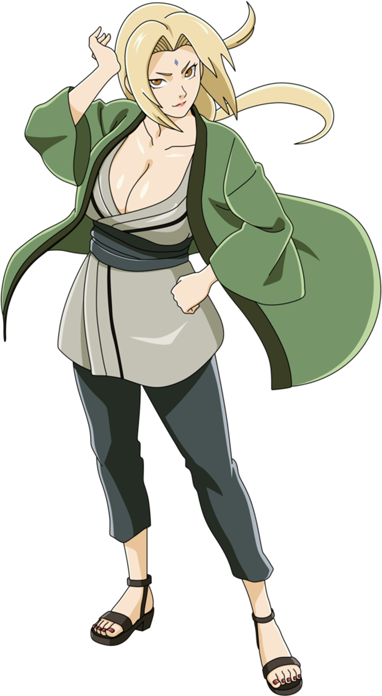

Tsunade

Tsunade est l'une des légendaires Sannin de Konoha. Considérée dans le monde comme la plus forte des kunoichi et la plus grande ninja médecin. Tsunade abandonna la vie de shinobi pendant plusieurs années. Elle fut finalement persuadée de retourner à Konoha et devint le Cinquième Hokage.
